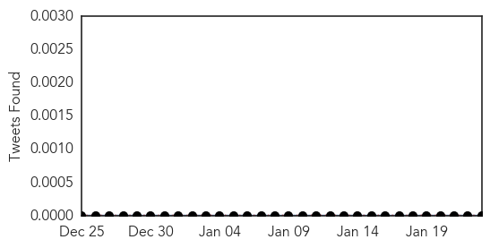
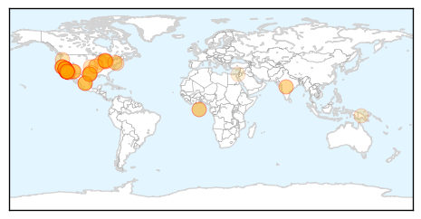

Measles
30-Day Web Trend
15 alerts, 3 warnings

30-Day Twitter Trend
0 alerts, 0 warnings

Article Locations
Article Confidences

Top Articles:
- 0.999
- Flu Number of Deaths This Year Manage to Eclipse Those of the 4 Previous Years Combined Together
- 0.998
- 78 People Now Infected in U.S. Measles Outbreak
- 0.997
- Outbreak of 51 measles cases linked to Disneyland
- 0.995
- It's A Small World After All: Disneyland's Measles Outbreak Spreads Quickly
- 0.993
- California Measles Virus Outbreak: Symptoms and Signs, Treatments and Vaccines, and Prevention
- 0.991
- School Officials Working to Stem Spread of Measles
- 0.991
- Measles investigation narrows time frames for public exposure
- 0.990
- Vaccine Exemptions Back in Spotlight After Measles Outbreak
- 0.988
- Disneyland measles outbreak puts the spotlight on kids who don't get the vaccine
- 0.987
- Disneyland measles outbreak catches many by surprise
- 0.980
- Measles case in Michigan likely related to Disneyland outbreak
- 0.980
- Four measles cases confirmed in San Bernardino County
- 0.979
- Disneyland measles outbreak spreads
- 0.975
- California alert after Disneyland measles outbreak
- 0.974
- Our say: Wrongheadedness and measles don't mix
- 0.972
- How the U.S. went from eliminating measles to a measles outbreak at Disneyland
- 0.972
- Measles outbreak changes game for Bay Area hospitals
- 0.972
- Disneyland measles outbreak spreads
- 0.972
- Disneyland Measles Outbreak in California Highlights Absurdity of Anti-Vaccine Movement
- 0.972
- Disneyland measles outbreak spreads
- 0.972
- Disneyland Measles Outbreak Blamed on Anti-Vaccine Movement : Society : Chinatopix
- 0.969
- California Measles Outbreak Prompts Schools to Issue Alert to Parents in San Francisco Bay Area
- 0.967
- Disneyland measles outbreak spreads to 6 states
- 0.966
- Unvaccinated Face Ongoing Risk But Immunized Also Infected
- 0.966
- Five Disneyland Employees Infected With Measles In California
- 0.962
- Measles outbreak raises question of vaccine exemptions
- 0.962
- CDC urges parents to get children vaccinated against measles
- 0.961
- Measles Disneyland Anti-Vaccine
- 0.960
- Disney parks-linked measles outbreak grows to 70 cases
- 0.957
- The New Measles
- 0.952
- 70 Cases Linked to Disneyland; Still Spreading?
- 0.951
- Measles Outbreak Linked To Disney Theme Parks
- 0.949
- Central Ga. doctors encourage vaccination
- 0.947
- Michigan confirms first measles case of 2015, urges residents to vaccinate
- 0.947
- Measles is horrible and is yet another thing the anti-vaccine movement is wrong about
- 0.944
- Camarillo Bank Visitors Might Have Been Exposed to Measles
- 0.940
- I've only had one dose of the measles vaccine. What should I do?
- 0.938
- Michigan Confirms First Measles Case of 2015
- 0.938
- First Michigan measles case in 2015 confirmed
- 0.935
- Disneyland measles outbreak puts California on alert
- 0.930
- Health Dept. encourages vaccinations in light of Measles scare
- 0.928
- Measles outbreak has some doctors reconsidering vaccine recommendations
- 0.923
- UPDATED: State says Alaska measles case is likely not a 'true case' of the illness
- 0.923
- NIAID director Dr. Anthony Fauci: It's a "shame" parents aren't vaccinating children
- 0.922
- Measles outbreak: Number of cases grows in Bay Area, statewide
- 0.919
- Disneyland measles outbreak puts California on alert
- 0.914
- Measles outbreak: Number of cases grows in Bay Area, statewide
- 0.913
- Measles tied to lower rate of vaccination
- 0.913
- Measles case reported in Oakland County; vaccine shots available
- 0.910
- Measles outbreak casts spotlight on anti-vaccine movement
Showing top 50 articles...
Top Tweets:
-
No tweets found for Jan 23, 2015
Ebola
30-Day Web Trend
1 alerts, 0 warnings

30-Day Twitter Trend
0 alerts, 0 warnings

Article Locations

Article Confidences

Top Articles:
- 1.000
- Ebola ebbing in West Africa, Liberia cremates 2,800 Ebola bodies - NAN
- 1.000
- United Nations Claim Ebola Epidemic Significantly Slowing, Sierra Leone Schools To Reopen In March, Ebola Health Workers Still Fearful
- 1.000
- Health authorities report 3 new Ebola cases in Liberia, previously declared Ebola free
- 1.000
- Ebola Vaccine Headed to West Africa
- 1.000
- Health authorities report 3 new Ebola cases in Liberia, previously declared Ebola free
- 1.000
- Fight against Ebola has reached a 'turning point'
- 1.000
- Ebola vaccine heads to Liberia for tests even as crisis eases
- 0.999
- UN reports significant drop in Ebola cases
- 0.999
- ‘My dream job to fight Ebola’ - KwaZulu-Natal
- 0.999
- Studies detail Ebola spread, response steps
- 0.999
- #Ebola vaccine set for trial in West Africa
- 0.998
- Ebola Declining but Still a Threat
- 0.998
- How we beat Ebola
- 0.998
- Falling Ebola cases show 'turning point'
- 0.998
- Sierra Leone emergency anti-malaria drive reaches 2.5 million people - TRFN
- 0.997
- Sierra Leone eases blocks on travel, business as Ebola wanes
- 0.997
- ′Victory is in sight′ in the fight against Ebola
- 0.997
- First doses of Ebola vaccine arrive in Liberia ahead of the largest-ever trial, with 30,000 volunteers taking part
- 0.997
- Science Journal: Just 5 Ebola cases left in Liberia
- 0.997
- New Brunswick and federal health officials test Ebola preparedness - New Brunswick
- 0.996
- Ebola 'Turning Point' as Cases Decline
- 0.996
- WHO says cash crunch, rains could thwart Ebola efforts
- 0.996
- Parents Blame Teenage Pregnancy On Water Crisis
- 0.996
- Experimental Ebola Vaccine On Its Way To Liberia For Human Trials
- 0.996
- Ebola Survivor Blood Trial May Move as New Cases in Liberia Wane
- 0.996
- Ebola crisis: Sierra Leone lifts quarantine measures; WHO warns against complacency
- 0.995
- Sierra Leone Lifts Nationwide Ebola Quarantines
- 0.995
- Liberia moves a step closer to Ebola vaccine trials
- 0.995
- UN health agency to hold special weekend session on Ebola; warns against donor fatigue - Sierra Leone
- 0.995
- Kailahun District Clocks 42 Ebola Free Days
- 0.995
- Government of Canada and Government of New Brunswick continue to work together to strengthen domestic preparedness for Ebola
- 0.995
- Just five Ebola cases left in Liberia, government says
- 0.994
- Government of Canada and Government of New Brunswick continue to work together to strengthen domestic preparedness for Ebola - News Press Release
- 0.994
- Ebola decimating Africa’s gorilla and chimpanzee populations, conservationists warn
- 0.994
- Médecins Sans Frontières (MSF) International
- 0.993
- 2 Nurse Dead, As Many Infected of Crimean-Congo Hemorrhagic Fever
- 0.993
- Health officials test preparedness for Ebola outbreak in New Brunswick
- 0.993
- Large-scale Ebola vaccine trial to start in Liberia
- 0.993
- Ebola vaccine trials may face limitations on waning epidemic
- 0.993
- National Ebola Response Update, 23rd January 2015 - Liberia
- 0.993
- Doctor from Ottawa’s CHEO headed to Sierra Leone to join Ebola fight (with video)
- 0.992
- 5 Ebola Cases Left in Liberia
- 0.992
- Fast-tracked Ebola vaccine offers fresh hope
- 0.992
- Endangered Gorillas, Chimpanzees Unseen Victims Of Ebola
- 0.992
- Health chiefs plead for more Ebola funds in final phase of epidemic
- 0.991
- Ebola situation still 'extremely alarming': World Health Organisation, Europe News & Top Stories
- 0.991
- Ebola drugs
- 0.990
- Sierra Leone lifts Ebola quarantine measures amid progress
- 0.989
- Sierra Leone lifts Ebola quarantine measures
- 0.989
- WHO runs low on cash for Ebola but progress key before rainy season
Showing top 50 articles...
Top Tweets:
- 0.862
- Liberia is utilizing Treatment Units & Community Care Centers to slow the spread of Ebola. http://t.co/9qIYj24BIQ
- 0.741
- Community health monitors being trained to detect, report Ebola trigger events in Sierra Leone. http://t.co/F8ORoliP79
- 0.729
- RT: @Reuters 2/Ebola Light signals ignored leading 2 postponing int.emergency response when reoccurrence of cases i…
- 0.668
- New report from studies key factors of Ebola outbreak TackleEbola http://t.co/6yDX92u4P8
- 0.653
- RT: Ebola data as Jan 23: Guinea +2/+44 Liberia +46/+31 Sierra Leone + 60/+14 per WHO compared to Jan 21 1/2 http://t.…
- 0.604
- RT: The NIH is launching Ebola study in Liberia, is in talks with Sierra Leone. Glaxo ships its vaccine. My story http…
- 0.595
- .@MSF_USA provides a complete break down of Ebola & operation highlights of their virus response http://t.co/6gw3d2xpkt
- 0.563
- CDC worked closely with Sierra Leone to establish the Community Event-Based Surveillance System. Ebola http://t.co/F8ORoliP79
- 0.546
- RT: Live now: Video chat with a doctor who survived Ebola and the co-discoverer of the virus. Watch: http://t.co/17i3r3wqDI
- 0.543
- The Ebola epidemic in W Africa is showing signs of progress, but far from over. Listen to new CDC podcast. http://t.co/9gKaFzPbUM